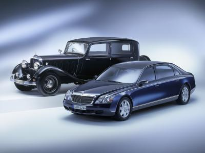
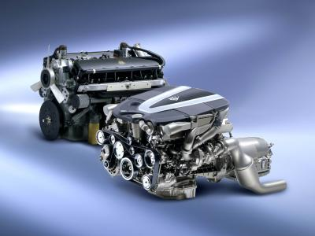
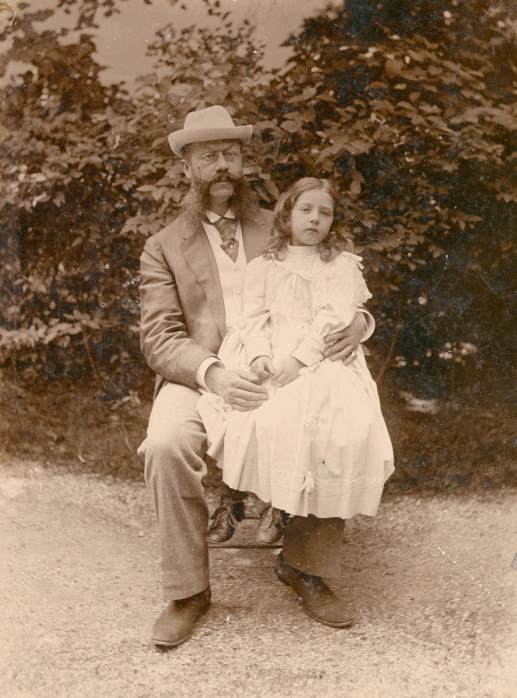
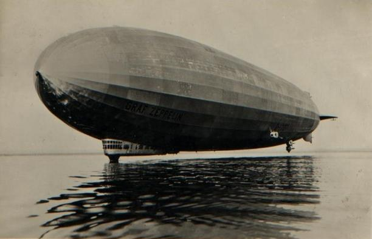
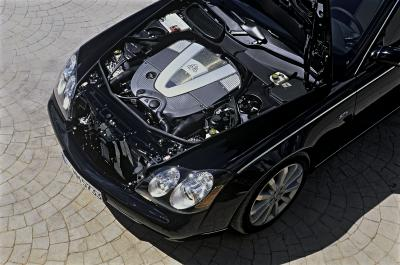
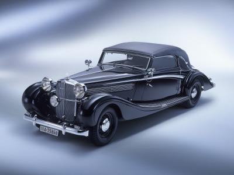

Historien om Maybach
May 23rd, 2011 by user
Maybach av Mercedes – ny era med historiska rötter

Historiken om bilmärket Maybach är också berättelsen om automobilens verkliga pionjärer. Av den framgår det att tekniska lösningar företagsfusioner och samarbetsavtal inte är något modernt påfund och att kopplingarna mellan Gottlieb Daimler – som senare bildade Daimler Benz AG tillsammans med Karl Benz och Wilhelm Maybach är av mycket gammalt datum.
När märket Maybach nu står på tröskeln till en ny era beror inte på något så enkelt som att den 1998 bildade DaimlerChrysler-koncernen äger rättigheterna till varumärket Maybach. Den historiska förankringen sträcker sig långt över hundra år bakåt i tiden.
Den första bilen med namnet Maybach var nämligen i grunden en Mercedes och, paradoxalt nog, den första Mercedes-bilen var i grunden en Maybach – trots att de två inte var samtida…Uppgifterna, snarare uppskattningarna, varierar; Maybach byggde 1800 bilar eller kanske 2200.
Ingen vet med säkerhet, men det mesta tyder på att den lägre siffran ligger närmast sanningen.
1800 bilar på drygt 20 år. Inte mycket att orda om kanske, knappast en produktion att yvas över med dagens mått mätt. Men så var Maybach inte heller något dussinmärke, utan ett fabrikat där extremt stor omsorg ägnades varje detalj. Ett faktum som kommer att prägla även den nya Maybach-erans bilar.
Den första bilen med namnet Maybach var alltså i grunden en Mercedes och den första Mercedes en Maybach.
Detta faktum kräver en förklaring som daterar sig bakåt i tiden till början av 1870-talet. Vid den tidpunkten fick den unge Wilhelm Maybach anställning hos Gasmotorenfabrik Deutz nära Köln. Uppgiften låter kanske inte så spännande, men till saken hör att fabriken ägdes av Nikolaus Otto och Eugen Langen. Närmare bestämt den Otto som lånat sin namn till den motor vi vanligen kallar fyrtaktare.
{kind=link}
Daimler och Benz
Hos Deutz började Maybach arbeta som chefskonstruktör, anställd av fabrikens tekniske direktör, som hette Gottlieb Daimler. Tio år senare, 1882, startade herrar Daimler och Maybach en egen firma i akt och mening att förfina Otto-, det vill säga fyrtaktsmotorn. Vilket bland annat innebar att skapa en pålitlig funktion vid varvtal överstigande 200 varv per minut. 1885 gjorde de båda kompanjonerna det som kommit att kallas världens första motorcykel och året därpå stod Daimlers första motorvagn klar. Förutsättningen för de båda konstruktionerna var den förfinade Otto-motorn. Några år senare konstruerade Wilhelm Maybach, inför en utställning i Paris, en motorvagn, eller automobil om man så vill. Motorvagnen var revolutionerande och i allt väsentligt skilde den sig från den tidens utgångspunkt, nämligen hästvagnen. Maybachs skapelse var en rörramskonstruktion där rören innehöll kylvattnet till den tvåcylindriga V-motorn på 565 cc. Bilen hade en fyrväxlad växellåda och trumbroms. Emellertid kom franska firmor att ta ledningen i bilens utveckling. Bland annat genom att på ett begåvat sätt licensbygga Daimler-motorn, som huvudsakligen skapats av just Wilhelm Maybach. Vid den här tiden beslöt sig Gottlieb Daimler för att grunda en ny firma under namnet Daimler Motoren-Gesellschaft. Karl Benz var samtida med Gottlieb Daimler, men arbetade i Mannheim. 1885 provkörde han sin första motorvagn, dvs det fordon som brukar kallas världens första praktiskt användbara bil med förbränningsmotor. Under firmanamnet Benz & Co, Rheinische Gasmotorenfabrik, skapade han en väl fungerande bilfabrikation.

Stationära motorer
Trots att såväl namnet Daimler Motoren-Gesellschaft som pengarna till företaget kom från Daimler, tvingade den nya firmans styrelse fram en kursändring. Man skulle huvudsakligen tillverka stationära motorer, löd beslutet. Det passade inte alls Wilhelm Maybach, som tackade nej till erbjudandet om anställning. 1893 började i stället Maybach att, tillsammans med en liten grupp betrodda mekaniker, arbeta vidare med motorer i allmänhet och med förgasare i synnerhet. De nödvändiga pengarna till detta kom också från Gottlieb Daimler.
Arbetet var framgångsrikt och ett par år senare erbjöds Wilhelm Maybach på nytt av Daimlers styrelse posten som chefskonstruktör. Uppenbarligen hade sagda styrelse då börjat inse automobilens potential? Maybach accepterade erbjudandet och 1897 började en blygsam serietillverkning av en bil som i huvudsak var konstruerad av honom.

Mercedes – älsklingsdottern
1899 fick Daimler Motoren-Gesellschaft i Bad Cannstatt, strax utanför Stuttgart, besök av den något excentriske och mycket entusiastiske Emil Jellinek. Mannen var av österrikiskt/ungerskt ursprung och representerade dubbelmonarkin som konsul i Nice – på den tiden ett italienskt vattenhål för välbeställda. Jellinek köpte två bilar, tog dem till Rivieran och placerade omedelbart Daimler-bilarna som etta och tvåa i en tävling mellan Nice och Castellane. Därefter sålde han den ena vagnen till baron Arthur Rothschild och beställde ytterligare 36 bilar från Daimler. Men med Jellineks beställning var en lång rad krav förknippade. I själva verket var det en helt ny konstruktion han ville ha. Och inte bara det – han krävde också att få ge bilarna ett eget namn, nämligen sin dotters; hon hette Mercedes…
Emil Jellinek önskade köpa bilar som var lägre än de tidigare, och som skulle ha en nykonstruerad fyrcylindrig motor. Maybach tolkade Jellineks utkast på ett sätt som resulterade i vad som sedan dess har kallats den första moderna bilen. Den hade frontmonterad motor under en huv, kedjedrivning på bakhjulen, två kraftigt skålade säten och, faktiskt, ett mycket sportigt utseende. Notera att detta var flera år innan begreppet sportvagn myntats!

Luftskepp
1900 hade greve Ferdinand von Zeppelin provflugit sitt första luftskepp över Bodensjön. De båda motorerna gav 16 hästkrafter och var av Daimlers fabrikat. Greven drabbades av en lång rad motgångar i form av dyrbara haverier, men lyckades trots det fortsätta utvecklingen av luftskeppen. Verksamt bidragande i denna utveckling var Wilhelm Maybach och hans son Karl, som var en lysande tekniker. 1909 startade far och son Maybach en firma vars huvudsakliga uppgift skulle bli att utveckla och bygga allt starkare motorer till luftskepp. Man kan med en titt i backspegeln tycka att det var en smal nisch att arbeta i. Men vid denna tid stod intresset för teknisk utveckling på topp. Dessutom ökade spänningarna i Europa och efterfrågan på driftsäkra motorer var enorm. Under Karl Maybachs ledning växte firman snart till att bli en av världens mest framstående tillverkare av högklassiga motorer. Bland annat vattenkylda flygplansmotorer, speciellt avsedda att fungera på hög höjd. Det Stora Kriget 1914-18 blev tekniskt sett en tragisk höjdpunkt för Maybachs firma. Motorerna var mycket efterfrågade, men fredsslutet innebar att efterfrågan försvann. Segrarmakterna förbjöd nämligen all tillverkning av flygmateriel i Tyskland. Förbudet blev självklart ett bekymmer för åtskilliga företag som tillverkat krigsmateriel, men några av dem lyckades vända omständigheterna till sin fördel. I fallet Maybach innebar det att Wilhelm kunde återvända till bilkonstruktionerna, hans kanske största intresse, och att han hade en lika bilintresserad medarbetare i sonen Karl.
Maybach på Mercedes
1919 rullade en första personbilsprototyp. Den var emellertid inte en hel Maybach-konstruktion eftersom chassiet kom från en Mercedes! Åter möttes alltså de båda namnen. Konstruktionen var långt ifrån så konventionell som den såg ut att vara. W1, som bilen kallades, hade en 36 hästkrafters stark Maybach-motor men ingen växellåda. Istället var bilen försedd med en mycket kraftig, vändbar elektrisk startmotor/elmotor, som drev bilen i låg fart. Bensinmotorn användes bara i högre hastigheter. Den första Maybach-prototypen var alltså en hybridbil! Typ W2 visades 1920. Den lär ha tillkommit till genom att den holländska firman Spyker beställde 1.000 motorer betecknade 22/70. Emellertid skulle det visa sig att holländarna grovt överskattat efterfrågan och de köpte bara omkring 150 motorer. Hos Maybach konstruerades därför en bil runt denna motor. Typ W2 fick föga uppmärksamhet. Annat blev det med nästa modell, logiskt betecknad Maybach W3 och till alla delar konstruerad av Karl Maybach.
Lättkörd
Grundtanken med den konstruktionen var att göra framförandet så enkelt som den tidens teknik överhuvudtaget tillät. Föraren skulle inte behöva ta händerna från ratten under körning varför växelspaken ersatts av en pedal. Bilen saknade egentlig kopplingspedal och rullade vid normalfart på direktdrift. Det kunde den göra eftersom motorn hade så god elasticitet och högt vridmoment. Vid start och mycket låg fart gick bilen på elektricitet och vid mellanhastighet skedde framdrivningen via en planetväxel. Typ W3 hade mekaniska fyrhjulsbromsar, den första tyska bil med denna finess. Maybach W3 fick stor uppmärksamhet i den tyska fackpressen, men det ekonomiska läget i Tyskland och övriga Europa 1921/22 gjorde att intresset och köpkraften var i botten. Bland Karl Benz många konstruktioner vid den tiden märktes särskilt förkammardieseln, till en början använd i traktorer och från1924 i lastbilar. Samma år inledde hans företag ett samarbete med Daimler Motoren Gesellschaft och två år senare, 1926, gick de båda fabrikerna samman. Så föddes bilföretaget Daimler-Benz AG som tillverkade bilar under namnet Mercedes-Benz. 1926 lanserades Maybach modell W5 (någon W4 fanns aldrig). Den var en förfining av föregångaren, och samtidigt var det en ännu mer lättkörd bil. Liksom föregångaren hade den en rak, sexcylindrig motor, nu på sju liter och 120 hästkrafter vid 2.400 r/min. Block och topp var gjorda i ett gjutjärnsstycke, varför det inte behövdes någon topplockspackning. Förbränningsrummen var halvsfäriska och de båda ventilerna låg vågrätt mitt emot varandra. Motorn hade två kamaxlar och vevstakarna var urborrade och ihåliga för att spara vikt. En av firma Maybachs många specialiteter var förgasare, som det ju ställdes extra stora krav på i flygmotorer. Den förgasare som användes i W5 var, för driftsäkerhetens skull, ytterst komplicerad och sannolikt en mardröm att renovera flera decennier senare. Även W5-modellen startades och kom i rullning på elektrisk väg. Själva manövrerandet hade nu avsevärt förenklats, men till priset av en betydligt mer komplicerad konstruktion. Tolv cylindrar I möjligaste mån användes lättmetall i Maybach-bilarna, och företaget var extremt noga i materialkontrollen. Praktiskt taget alla delar tillverkades vid den egna fabriken i Friedrichshafen och undersöktes mycket ingående före montering i bilarna. W5-bilar såldes både i Europa och till amerikanska kunder. Bilarna uppskattades särskilt för sin tysta och mycket mjuka gång, och för sin stora pålitlighet. Exklusivitet innebar vid denna tid ingen som helst garanti för driftsäkerhet, men Maybach-ägaren kunde räkna med färre driftstörningar än de flesta andra bilägare. Wilhelm med sonen Karl Maybach hade med Typ W5 inte bara skapat en magnifik och användbar vagn de hade också förberett sig själva och marknaden för ett verkligt mästerstycke, den tolvcylindriga Maybach. Det är ett lika intressant som oomtvistat faktum att världsekonomins djupdykning i slutet av 20-talet sammanfaller med lanseringen av en rad luxuösa, mångcylindriga bilmodeller. Hos Maybach Motoren-Werke GmbH satsade man nu på en ytterst påkostad sjulitersmodell, som emellertid var betydligt mindre komplicerad i sin konstruktion än föregångaren varit.

Större motorer
Maybach 12 hade sålunda en tämligen normal förgasare och ett fullständigt konventionellt drivsystem med motor, koppling och växellåda som i exempelvis den samtida Grosser MercedesBenz med 7,7-liters rak åtta. I slutet av 20-talet gick vägen till bättre prestanda över större motorer. Något som kunderna efterfrågade och vara beredda att betala för i takt med att vägnätet byggdes ut. Den tolvcylindriga Maybach-vagnen hade en vanlig treväxlad växellåda. Av detta kan man sluta sig till att motorn ansågs tillfredsställande, både i fråga om effekt och vridmoment. I mitten av 1930 kom den så kallade DS 7, också den tolvcylindrig och med sju liters cylindervolym. Modellen fick tillnamnet Zeppelin, passande med tanke på dess storlek och tysta gång. Motoreffekten låg på 150 hästkrafter den treväxlade växellådan må ha förefallit högst normal men var närmast ett under av komplexitet. Här fanns sålunda de så kallade “Abweisklauenkupplungen”, som Maybach konstruerat och som senare blivit föremål för flera, tekniska avhandlingar.
Unik koppling
Konstruktionen utgör grunden för de olika slags Maybach-växellådor, som kom att i decennier användas bland annat i rälsfordon. Abweisklauenkupplungen är en sorts tandkopplingar som är särskilt användbara för servomanövrering, och som bland annat gjorde det möjligt att handskas med Zeppelin-modellensväxellåda med hjälp av en liten spak i rattnavet. 1931 ersattes DS 7 med DS 8 (också den kallad Zeppelin), vars V12-motor hade en cylindervolym på 7.978 cc, dvs 8 liter. Motoreffekten låg nu på 200 hästkrafter, en effekt som behövdes eftersom de karosserier som klädde Maybach-chassierna oftast var mycket gediget byggda. Växellådan i DS 8 skilde sig på många punkter från föregångarens. Åter var det en specialkonstruktion där själva växelväljandet utfördes från ratten och kopplingsproceduren genomfördes med en rörelse med gaspedalen. Lådan var av den typ som kallades “Doppelschnellgang” och hade inbyggd överväxel. Den var 4-växlad med alla drev i konstant ingrepp och hade i praktiken åtta växlar framåt. En senare DS 8-version, lanserad 1937, hade ytterligare en typ av växellåda, enklare i konstruktionen, men med sju växlar framåt. I Tyskland registrerades 56.039 nya bilar år 1931. Av dessa kom bara 66 stycken från Maybachfabriken.
Zeppelin
Totalt tillverkades 183 olika Zeppelin-modeller. Merparten av bilarna karosserades i Tyskland där specialisten Spohn tycktes vara favoriten bland Maybachs välsituerade kunder. Men också Gläser i Dresden och Erdmann & Rossi i Berlin klädde Maybach-chassier. Maybach-kunden köpte total lyx, en bil som visserligen var större och tyngre än alla andra, men som samtidigt var förunderligt lätt att hantera. Det var naturligtvis all den avancerade chassitekniken som gjorde Zeppelin-bilarna mer lättkörda än något annat av den tidens lyxmärken. Ett komplett Zeppelin-chassi kostade 29.500 Reichsmark, vilket var exakt samma summa som begärdes för ett Mercedes 770-chassi. Och ungefär tio gånger mer än vad man fick ge för en körklar DKW.

Mindre modeller
1934 lanserade Maybach en mindre modellserie kallad SW. De hade sexcylindrig motorer men nästan allt annat, utom växellådorna, skiljde sig från Zeppelin-modellerna. Medan de tolvcylindriga bilarna och deras föregångare haft stela axlar både fram och bak fick de mindre bilarna individuell hjulupphängning med en kombination av skruvfjädrar för mindre ojämnheter i vägbanan och bladfjädring för kraftigare stötar.
Modellerna SW 35, 38 och 42 fick sina namn efter cylindervolymerna. Samtliga tre hade en motoreffekt på 140 hästkrafter. Typ SW 42 var i produktion ända fram till 1941. De tolvcylindriga Zeppelin-modellerna byggdes under hela 1930-talet. För att möta konkurrensen från den nya Grosser Mercedes 1938 fick Zeppelin genomgå en mindre föryngringskur. Den ökade på intet vis efterfrågan, som stadigt, ända fram till nedläggningen 1940, låg på ungefär en bil i månaden.
Ny Maybach-era
Och hösten 2002, efter ett uppehåll på 62 år, kommer den helt nya Maybach. En bil som kommer att bygga på just de kvaliteter som gjorde Maybach-märket känt och aktat men som samtidigt kommer att väcka till liv den lättkördhet och snabbhet som den förra Maybach-erans kunder erfor.
Tillbaka till Maybach
Tillbaka hem